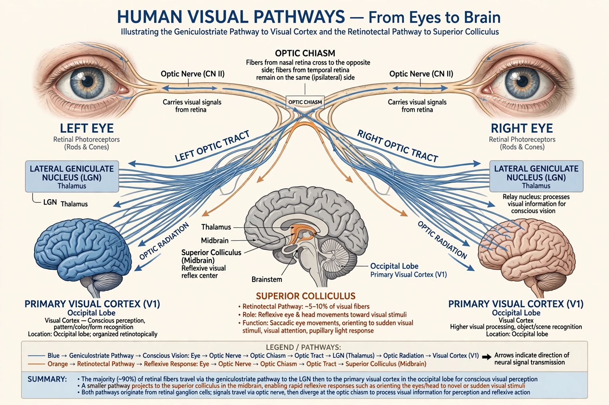

From Wikipedia, the free encyclopedia
| Blindsight | |
|---|---|
 Visual pathways of the brain | |
| Field | Neurology, neuropsychology |
| Cause | Damage to the primary visual cortex (V1) |
| Term coined | Pöppel et al., 1973; popularised by Lawrence Weiskrantz |
Blindsight is the ability of people who are cortically blind — due to lesions in the primary visual cortex (V1) — to respond to visual stimuli in their blind field without consciously perceiving them. Patients sincerely report seeing nothing, yet when forced to "guess," they can point to the location of objects, discriminate direction of motion, and sometimes distinguish shapes, expressions, and colours at levels well above chance.
The phenomenon was demonstrated in monkeys by Nicholas Humphrey and studied systematically in humans by Lawrence Weiskrantz and colleagues from the 1970s, notably with the patient D.B. Weiskrantz distinguished type 1 blindsight (no awareness at all) from type 2 blindsight, in which patients report a faint feeling that something has occurred without genuinely seeing it.
Blindsight is attributed to surviving visual pathways that bypass V1, especially the retinotectal route from the retina through the superior colliculus and pulvinar to extrastriate cortex. These pathways support rapid, unconscious processing — for example affective blindsight, in which patients respond to unseen emotional faces, plausibly via subcortical connections to the amygdala.
Blindsight is a central test case in the neuroscience of consciousness, showing that visual processing and visual awareness can dissociate: information can guide behaviour without entering conscious experience. It informs theories of consciousness and the rehabilitation of patients with cortical blindness.